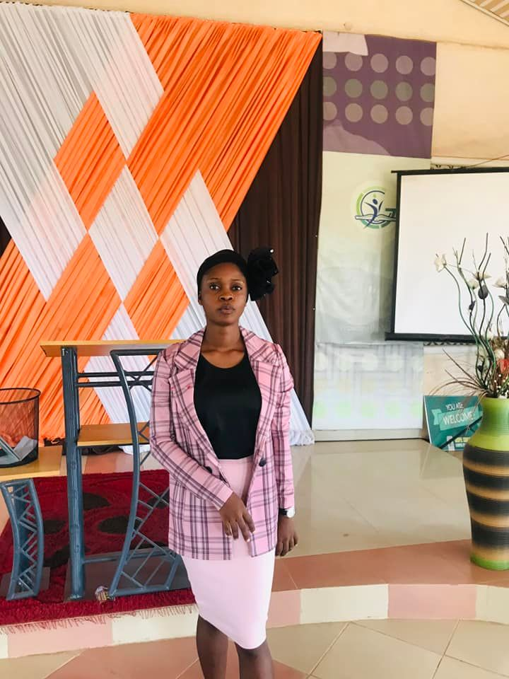

I bless God because he has made and mould me through Gospel Crusaders Campus Fellowship, it's indeed a Home; A place of God's presence and power. I got more insight on God's word and had a closer relationship with him more than ever. I'm grateful to God.

Mary Opayemi
The few months i spent in GCCF unilorin has been of great impact. My Prayer life was revived and the need to see more into growing spiritually dawn on me. My stay in GCCF also influence my leadership skills positively and i would recommend the fellowship for anyone who wants to excel both spiritually and academically
Othniel Olowe
Being a part of GCCF has been of huge blessing to me. The teaching of God's word, meeting with different kind of people who love God, having the platform to develop my God-given talents, being loved by God's people and many other things i may not mention, made my memebership at GCCF a very awesome experience.
Dayo Opaleke
God has helped me to understand the scripture and how to be a balanced Christian in all spheres. I have also been touched by God to be able live a pratical Christian life, to be consistent with my Bible reading and to be a responsible child of God.
Blessing Kolawole
GCCF has helped me to gain more insights in God's word and get to understand the essence of personal fellowship with God. I have received financial breakthrough on many occasions by just beleieving in the prayer of Faith by the leaders.
 Kingsley Bayode
Kingsley Bayode
I am grateful to God for the privilege of Fellowship, Brotherly Love and the building process the fellowship offers during my time there. I will want to advice you to take advantage of this great opportunity, ensure you bring others and also help them grow. Be a worthy ambassador at all times.
Engr Joshua Olowe